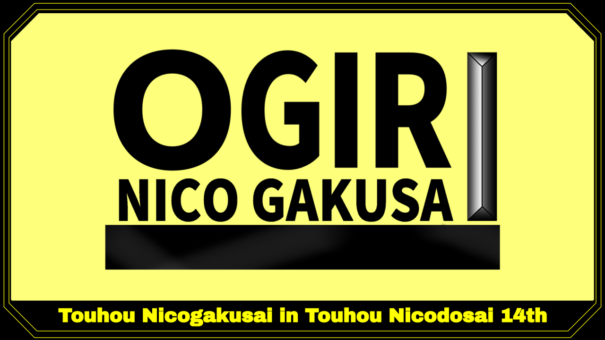

|

第二回幻想コメント大賞
＜開催概要＞
ニコニコ静画で大喜利を開催、その後に紹介生放送を実施、そしてその放送内で一番面白かったコメントを皆で決めよう！というお楽しみ企画です♪
※今回の祭り舞台は、リスペクト元である『東方ニコ童祭』です。
＜企画名称＞
第二回幻想コメント大賞
＜企画内容＞
①東方ニコ童祭本祭開始前の大喜利企画（ニコニコ静画）
◇イラスト参加
「NowOnAir」をテーマにニコニコ静画へおもしろイラストを投稿を投稿する。
（リポーターになったつもりで幻想郷の様々な風景、日常、事件、光景等を描いてください）
参考：前回幻想コメント大賞参加イラスト
※台詞吹き出し無し
※R18作品はご遠慮ください
※参加されたイラストは、まとめ動画・生放送・Twitterなどで、使用及び紹介されることがあります
※参加者おひとり1作品まで（複数作品での参加は不可）
※設定タグ：
（必ずタグロックをお願いします）
イラスト投稿期間 ：2022年7月1日（金）～7月7日（木）
◇
コメント参加
「NowOnAir」をテーマにイラストを見て思いついた一言をコメントで投稿する（いわゆる「写真で一言」）
※コメント投稿数制限なし（複数投稿可）
※集計期間後のコメントも大歓迎ですが、集計からは漏れてしまいますのでご了承ください
※参加されたコメントは、まとめ動画・生放送・Twitterなどで、使用及び紹介されることがあります
コメント投稿期間 ：2022年7月1日（金）～7月8日（金）20：00まで
②東方ニコ童祭本祭期間中の生放送企画（ニコニコ生放送）
・作品鑑賞（視聴者参加型）
運営にて選抜した面白コメントを紹介。
エモーションとアンケート機能を使い、「幻想コメント大賞」を決定します。
・即興大喜利（視聴者参加型）
生放送内にて即興で大喜利を開催。
こちらでも、「幻想コメント大賞」を決定します。
放送時刻：未定（決まり次第当サイトやTwitterにて告知致します）
③まとめ動画の鑑賞会企画
運営にてイラスト、コメントを全紹介したまとめ動画を投稿。
後日生放送にて鑑賞会を行います。
参考 ：前回幻想コメント大賞 まとめ動画
告知宣伝動画
前回大喜利まとめ動画振り返り生放送
|